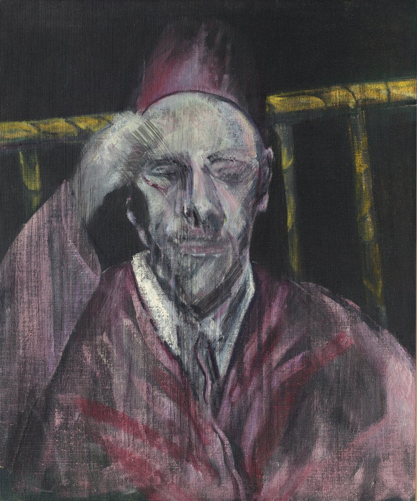

Francis Bacon was born in Dublin on October 28, 1909, to English parents, and spent most of his adult life in London. He had no formal art training. He taught himself to paint, destroyed most of his early work, and did not achieve serious recognition until 1944, when Three Studies for Figures at the Base of a Crucifixion was exhibited at the Lefevre Gallery. He died in Madrid in April 1992, at the age of 82, while visiting a friend. In the half-century between those two moments, he built one of the most important bodies of work in twentieth-century art.
Today, Bacon holds the Post-War British market essentially alone. His auction record stands at $142.4 million, achieved at Christie's New York in November 2013 for Three Studies of Lucian Freud, a 1969 triptych that had never previously appeared at auction.[1] That record made it, briefly, the most expensive work ever sold at public auction. It has since been surpassed by Picasso, but it remains the benchmark for Post-War British art and one of the defining sales of the past quarter century. His second-highest result, Triptych Inspired by the Oresteia of Aeschylus (1981), achieved £68.8 million at Sotheby's New York in June 2020.[2]
The life that made the work
Bacon's personal life and his painting are inseparable. He lived in Soho, at the centre of a circle of painters, drinkers, and gamblers that included Lucian Freud, Isabel Rawsthorne, and John Deakin. He gambled constantly, drank heavily, and worked in the mornings, alone in a chaotic studio. The disorder of his working environment was famous: a floor deep in photographs, torn-out images from scientific and medical texts, newspaper cuttings, and discarded canvases. Francis Giacobetti photographed the studio in detail in 1974. When Bacon moved from Reece Mews in South Kensington to a new space, the studio itself was eventually relocated intact to Dublin, where it is now housed and accessible to visitors at the Hugh Lane Gallery.
The people around him became his primary subjects. George Dyer, whom he met in 1963 and with whom he had a decade-long relationship, was the subject of more than 40 paintings. Dyer's death in Paris in October 1971, on the eve of Bacon's major Galeries Nationales du Grand Palais retrospective, produced the Black Triptychs of the early 1970s, widely considered among his most emotionally devastating works. Lucian Freud, with whom Bacon's relationship was simultaneously one of deep friendship and creative rivalry, was the subject of 14 paintings between 1964 and 1971. The 2013 triptych that set the auction record was the last of only two full-length triptychs Bacon made of Freud.[1]
The hierarchy of formats and why it matters
To collect Bacon intelligently, you need to understand the hierarchy of his output. It is not a continuum. It is a structure with very clear tiers, and the market prices each tier accordingly.
At the apex sit the triptychs. Bacon regarded them as his most significant work. He said so explicitly, and the market agrees with complete consistency. The three-panel format allowed him to explore a subject from multiple angles, psychological and physical simultaneously, in a way that a single canvas could not. The 1981 Oresteia triptych, the 1976 triptych that sold for $86.28 million at Sotheby's in 2008,[3] the Studies for a Portrait of John Edwards which achieved $80.8 million at Christie's New York in 2014[2] — these are the works that collectors worldwide competed for, and the prices reflect that competition. When a major Bacon triptych becomes available, whether at public auction or through private channels, it is a global event.
Below the triptychs sit the large-scale single-figure oils, and within that category, the most important variable is the identity of the sitter. A portrait of Lucian Freud commands a different tier than an anonymous figure study of equivalent period and scale. A portrait of George Dyer from the 1960s commands a different tier than one of his unnamed seated figures. The market for these works is deep and consistent: Study for a Portrait of Lucian Freud (1964) achieved over £43 million at Christie's in 2022 after having been out of public view since 1965.[2]
The Pope series occupies a category of its own. Beginning in 1949 and continuing for approximately two decades, Bacon produced works responding to Velazquez's Portrait of Pope Innocent X, a painting he famously never visited at the Galleria Doria Pamphilj in Rome. The screaming mouth, the glass cage, the dissolution of papal authority into psychological terror — these elements entered the language of Post-War visual culture in a way that few other images have. A major Pope series work represents a different order of cultural significance to other single-canvas Bacons, and the market has always priced it accordingly.
What collectors value and why
The collectors who have built the most significant Bacon holdings are not purely financial actors. They are people for whom Bacon's subject matter resonates at a personal level: the isolation, the physicality, the refusal of comfort. Bacon never painted landscapes. He never painted still lifes. Everything in his work is about the human body under pressure, psychological and physical. That intensity is what makes his work impossible to look away from, and it is what sustains demand across every market cycle.
Provenance is central to value in this market in a way that exceeds almost any other artist. Works with clear Marlborough Gallery provenance, the gallery that represented Bacon from 1958 onwards, carry an implicit authenticity endorsement that the market values explicitly. The Bacon catalogue raisonne, maintained by the Estate of Francis Bacon, is the primary reference document against which any significant acquisition must be checked. The Estate has, in recent years, been more rigorous about documentation standards, which has had the effect of widening the premium for works with complete and unambiguous records.
Condition is the variable that most buyers underweight. Bacon worked on unprimed canvas, often on the reverse side, and used oil paint, household emulsions, and a range of other materials in non-standard combinations. The result is a body of work where condition issues are structurally more prevalent than in the output of almost any other artist of comparable market standing. A pre-purchase technical examination by a specialist conservator is not a precaution at this level. It is a standard requirement.

The market in 2024 and 2025: what intelligent buyers should understand
The broader Post-War market has been under significant pressure since 2022. Public auction sales of art fell 25% in 2024, and the $10M-plus segment saw a 39% decline in lot volume.[4] For Bacon specifically, the contraction has been most pronounced in works without clear period significance, in studies and smaller works, and in works where condition issues had been underweighted at previous sales.
For triptychs and major Pope series works, the dynamic is more complex. The scarcity of these works means that a reduced number appearing at auction does not indicate reduced demand. It indicates that sellers with important works are choosing private channels over public ones, a trend that accelerated across the broader market in 2024 when private auction sales grew 14% against the decline in public sales.[4] The works that matter most in this category are not cycling through the room every decade. They are held, and when they move, they move privately.
For a collector with a serious mandate in this category, the implications are clear. The window to acquire a genuinely significant Bacon at terms that reflect the broader market softness is finite. The Bacon estate's ongoing attention to the catalogue raisonne means that documented works with clean provenance carry a growing premium over underdocumented ones. And the competition among qualified buyers for triptychs and major figure paintings has not softened proportionally with the broader market, because the supply of such works is simply not responsive to price.
Cambridge Collective maintains active relationships within the Bacon market at this tier. If you have a mandate in this category, we are open to a conversation about what is currently available and how we would approach it.
Sources
- Christie's. Post-War and Contemporary Art Evening Sale, 12 November 2013. New York: Christie's, 2013. Lot 8: Francis Bacon, Three Studies of Lucian Freud, 1969. Final price including premium: $142,405,000.
- MyArtBroker. Francis Bacon Record Prices. London: MyArtBroker, 2026. myartbroker.com/artist-francis-bacon/record-prices.
- Sotheby's. Contemporary Art Evening Sale, 14 May 2008. New York: Sotheby's, 2008. Lot 14: Francis Bacon, Triptych, 1976. Final price: $86,282,500.
- Art Basel and UBS. The Art Market 2025: Global Art Market Report. Basel: Art Basel, 2025.